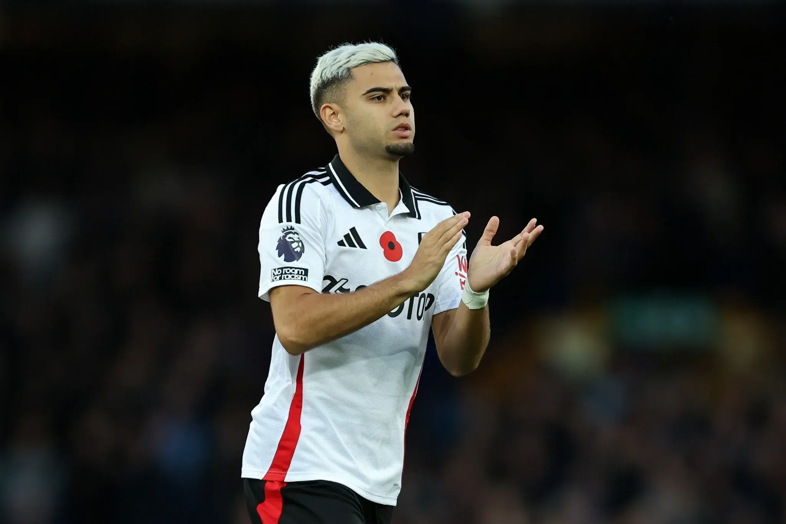
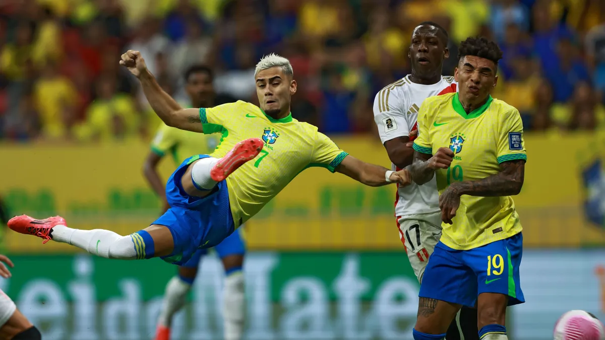

Palmeiras quer contar com o meia de 24 anos para a temporada de 2025
O Palmeiras sabe que é uma negociação dificil por conta dos altos valores, pois o Fulham atual clube de Andreas recusou uma oferta de 25 milhões de euros (R$151 milhões) do Olympique de Marselha
O Fulham Pagou 10 milhões de libras (R$64 milhões) e vai querer pelo menos recuperar o valor investido no atleta. O Palmeiras até considerou uma troca no começo envolvendo Richard Rios e Vitor Reis, depois era só o Rios, e até esse momento não tem mais nenhum jogador envolvido nessa negociação

Andreas Pereira na temporada de 2024 São 3 Gols e 8 Assistencias em 42 Jogos